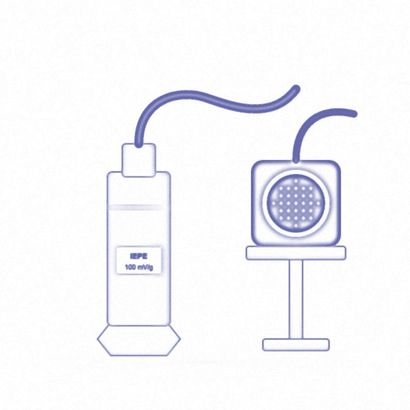
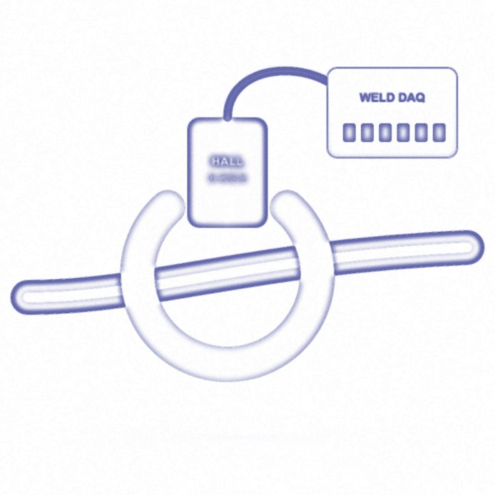
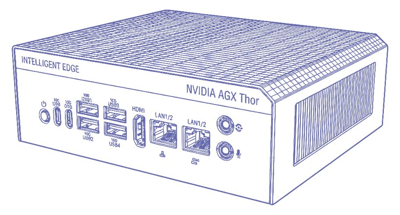

AI at the machine, for battery lines, chip fabs, space hardware and robot cells. AgentMesh watches every signal your line produces and decides within 30 ms (target). It acts on its own only where the risk is low. Anything safety-related goes to your PLC and operators as an alarm and a request.
AgentMesh sits in a compact pod on your factory network. The fast decisions stay at the machine.
AgentMesh reads sensors, robots, cameras and network traffic. It only reads.
It compares what it sees with your plant's history and your rules. It decides within 30 ms (target).
It acts on its own only where a wrong call is cheap and easy to undo. Anything else goes to your PLC and operators.
Every decision goes into a signed Evidence Log, with the likely cause and a drafted work order.
Each AgentMesh pod comes with an operator screen. It shows the live signals, what AgentMesh decided, similar past events and the drafted work order, on one page.


Only where a wrong call costs little and is easy to undo.
Anything that touches process safety. AgentMesh asks. People and safety systems decide.
Each kit is one packaged job for one kind of equipment. A pod can run several.
Joint, servo, gearbox and spindle health on robots, axes and conveyors, with a drafted work order.
Weld, formation and aging checks in line. Thermal-runaway warning on storage sites, as an alarm.
Drives, tool power, inverters and switchgear. Early signs of arcing and insulation failure.
DeepVision defect checks on cells, welds, wafers and composite parts.
Flags to the test conductor during a run, and a drafted post-test report.
Unauthorized writes and unusual commands on the factory network, with evidence for audits.




Generic hardware · illustrations
AgentMesh is designed against NIST SP 800-53 and the NIST AI Risk Management Framework. Designed against, not certified. Your assessor decides compliance.
Each site gets an evidence pack your team can use for SP 800-171 and CMMC, IEC 62443, fab equipment-security reviews and aerospace quality records.
AgentMesh is air-gapped. Export-controlled, defense and IP-sensitive data stays inside the boundary you already run. Nothing is shared back to us.
Tell us about one line or one problem. An engineer will show you what Unovie would watch, what it would catch and what it would hand your team.